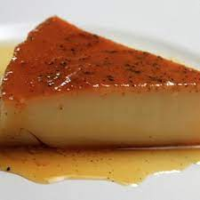

Creme Caramel Recipe

Description
Crème caramel (French: [kʁɛm kaʁamɛl]), flan, caramel pudding or caramel custard is a custard dessert with a layer of clear caramel sauce.
Ingredients
- 3/4 cup Chelsea White Sugar
- 1/2 cup water
- 2 cups milk
- 1/2 teaspoon vanilla essence
- 4 eggs
- 2 tablespoons Chelsea White Sugar
Steps
- Preheat the oven to 180ºC. Combine the first measure of sugar with the water in a heavy-bottomed saucepan.
- Gently heat, stirring constantly until the sugar has dissolved, then bring to the boil.
- Leave the syrup to boil without stirring until just golden, about 10 minutes.
- Working quickly, divide the syrup evenly between six individual ramekin dishes. Set aside.
- Heat the milk until almost boiling, then remove it from the heat.
- Add the vanilla. In a separate bowl beat together the eggs and the second measure of sugar until pale.
- Pour the heated milk into this egg mixture and stir to combine. Strain.
- Divide this mixture evenly between the caramel-lined dishes. Place the dishes in a roasting dish filled with enough water to come halfway up the sides of the ramekins.
- Bake for 35 minutes or until the custard is set. Remove the ramekins from the roasting dish and allow the custards to cool.
- Chill overnight, then tip from the moulds onto serving plates.